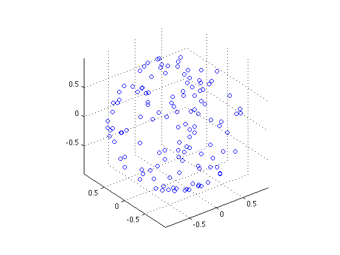

3D scatter plot from quaternion array.
(Quaternion overloading of standard MATLAB® function)
scatter3(q, varargin)
scatter3 plots a 3D scatter plot of elements in a pure quaternion vector. It supports the same parameter profiles as the MATLAB® function of the same name, but the first parameter must be a quaternion array.
>> scatter3(randv(1,128)); axis equal
results in the creation of the following plot.
